图形的变换问题是生活与数学巧妙结合的范例，常见的图形变换有轴对称、旋转、平移等几种形式。轴对称的基本性质是对应点到对称轴的距离相等；旋转的三要素是旋转点、旋转方向和旋转角度；平移关注的是方向和距离，平移后的图形形状大小不发生改变。几种变换形式都充分体现了对应的思想。
| 图形的变换问题 | 对应的经典问题 |
| 轴对称 | 画对称轴及完成轴对称图形另一半的问题 |
| 旋转 | 围绕某一点顺时针或逆时针旋转90°所形成的图形问题 |
| 平移 | 欣赏图案、通过变换创造图案的问题 |
例1 画出下面图形的轴对称图形。
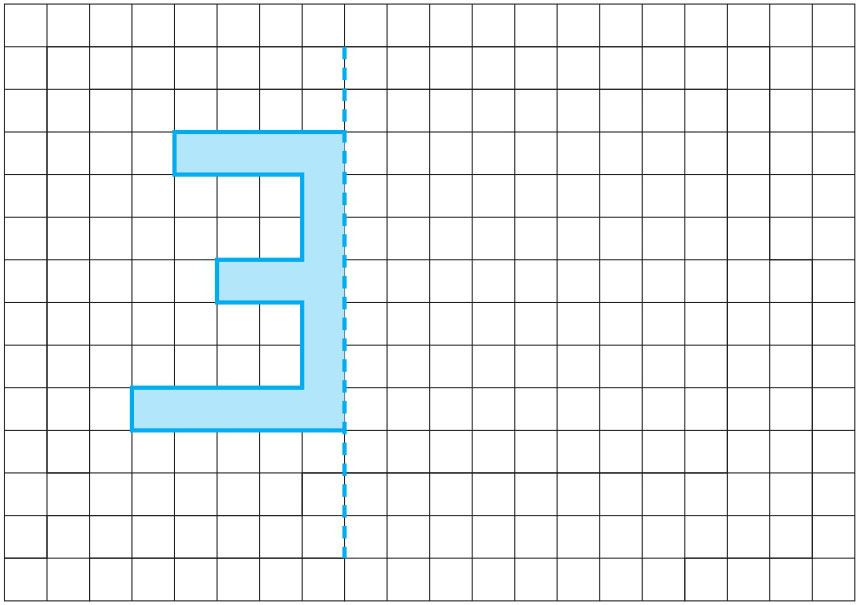
轴对称图形沿着对称轴对折，左右两边的图形能够完全重合。要重合，就需要让所画的对应点与原来的点到对称轴的距离相等，所以找准对应点是关键。一般画轴对称图形的步骤是：①在原图上定关键点；②数或量出关键点到对称轴的距离；③描出另一侧的对应点；④按图形连线。图示如下：
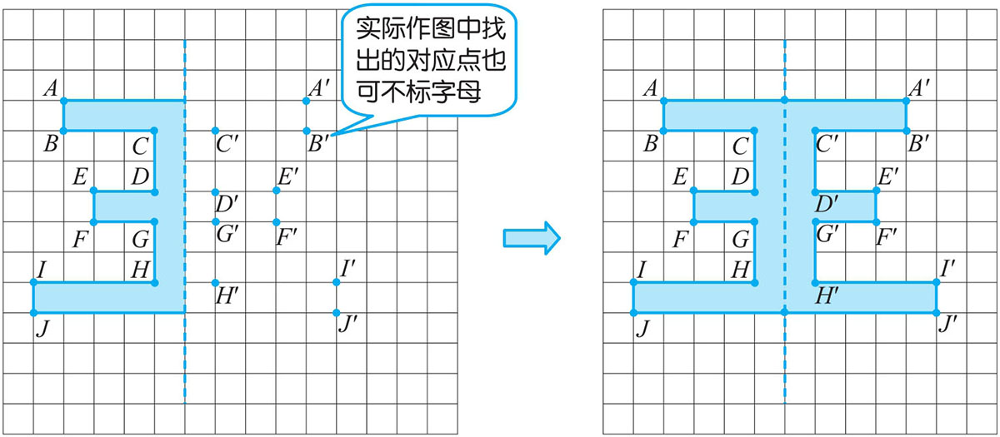
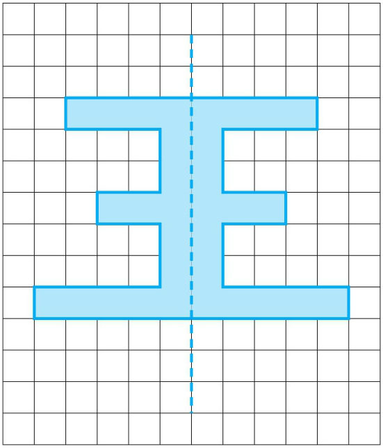
例2 画出四边形ABCO 绕点O 顺时针旋转90°后的图形。
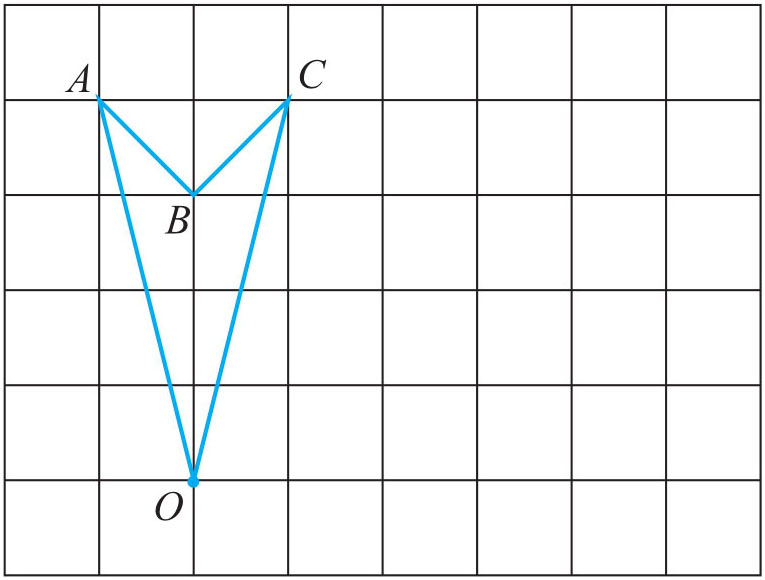
图形旋转前后形状、大小都不会变化，旋转后图形中的每条线段与原图相对应的每条线段的夹角都与旋转度数相等，对应的点到旋转点距离也相等。画四边形ABCO 旋转90° 后的图形，有两种方法：一是找关键点与旋转点的连线段与 网格线重合的点，便于利用网格的度数确定点，然后连线；二是利用辅助工具三角板或量角器与原线段（指与旋转点有关的线段）的夹角关系确定点，然后连线。图示如下：
方法一：
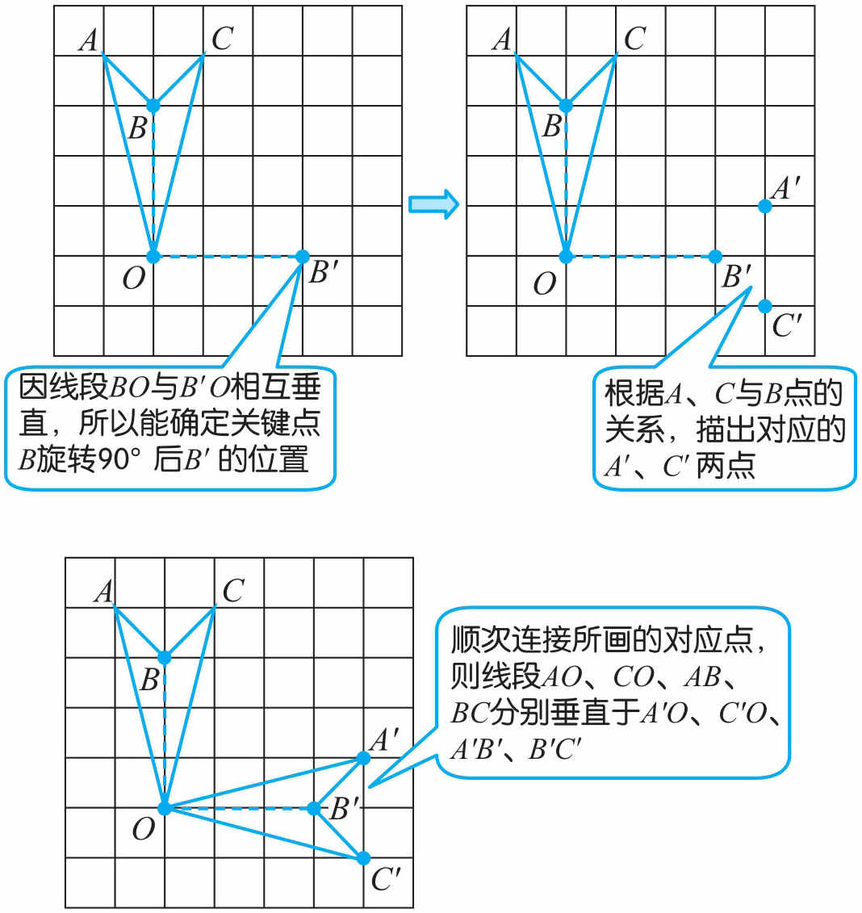
方法二：
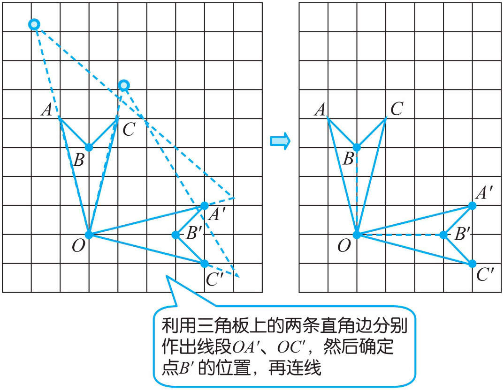
例3 如图所示，三角形ABC 顺时针旋转一个角度后得到三角形AB ′C ′，已知∠B =55°，∠C ′=35°。找出哪一点是旋转中心，并计算出旋转的角度。
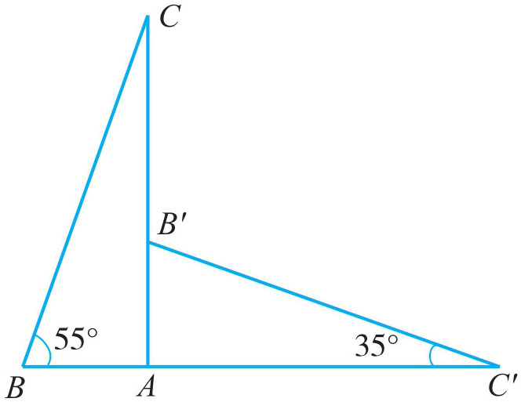
因旋转图形前后不变的点是旋转中心，所以A 点是旋转中心，旋转后两个对应角的度数不会发生改变，就能确定∠B 的对应角∠AB ′C ′也是55°，再根据三角形内角和是180°，计算出∠B ′AC ′为90°。要看前后两个图形旋转了多少度，就得找出原图与旋转后图形中任意一组对应线段所形成的夹角，比如线段BA 与对应的B ′A 形成的夹角是90°，说明此图形旋转了90°。
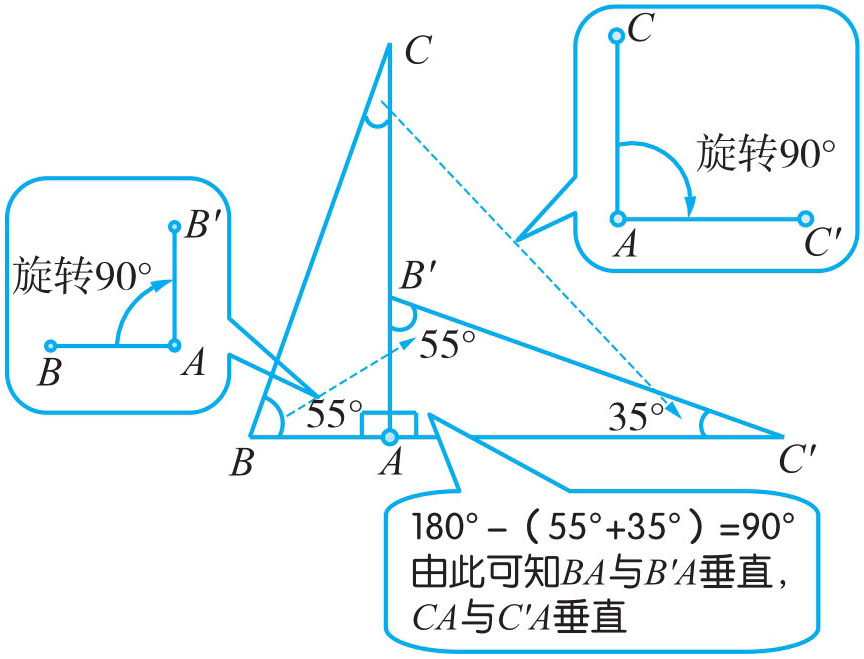
旋转中心是A
点；图形从三角形ABC
变换到三角形AB
′C
′顺时针旋转了90°。
例4 你能把下面的基本图形经过不同的变换设计出漂亮的图案吗？
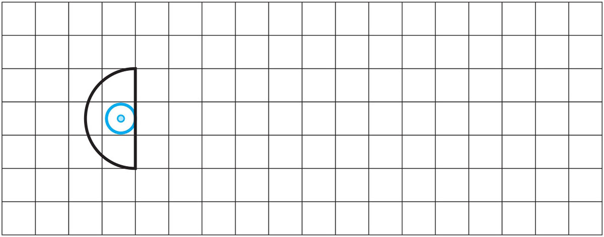
设计图案的基本方法有平移、旋转和对称，一个基本图形（规则或不规则的）可以经过简单的平移、旋转和对称得到简单而美丽的图案，也可以同时使用几种方法将基本图形经过无数次地变换得到复杂而漂亮的图案。
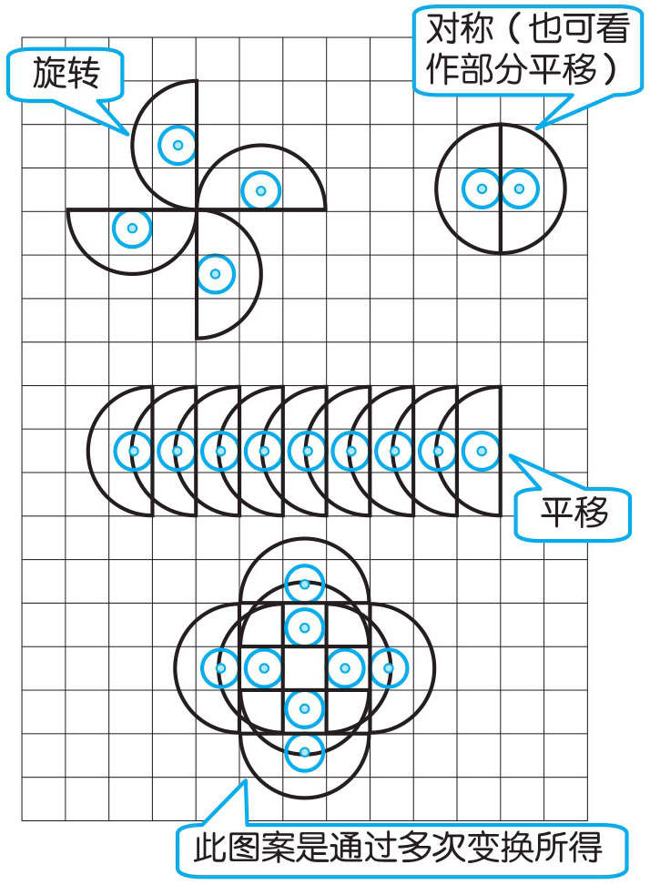
1．画出与左图成轴对称的图形。
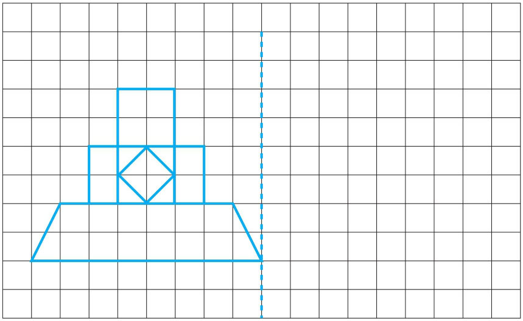
2．将下面长方形绕B 点逆时针旋转3次，每次旋转90°。
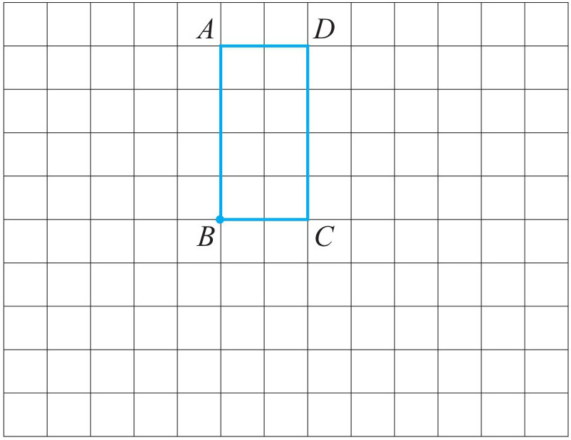
3．如图，将三角形ABC 绕点B顺时针旋转20°，得到三角形A ′BC ′，若BC 垂直于A ′C ′，求∠C 的度数。
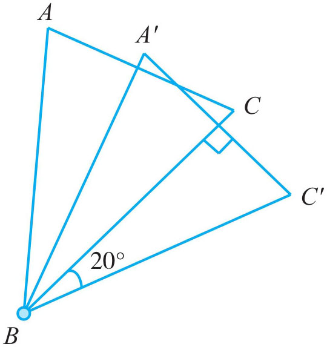
4．一个广告牌立于河面上，它上面的联系号码倒影在水中（如下图），你知道这个广告的联系号码是多少吗？
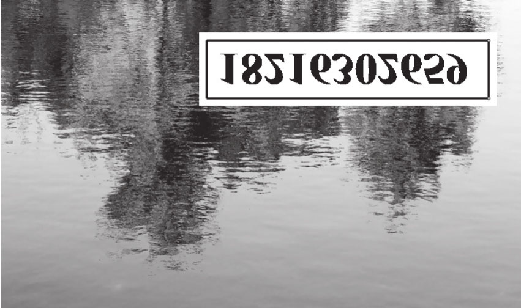
5．利用变换，设计漂亮的图案。
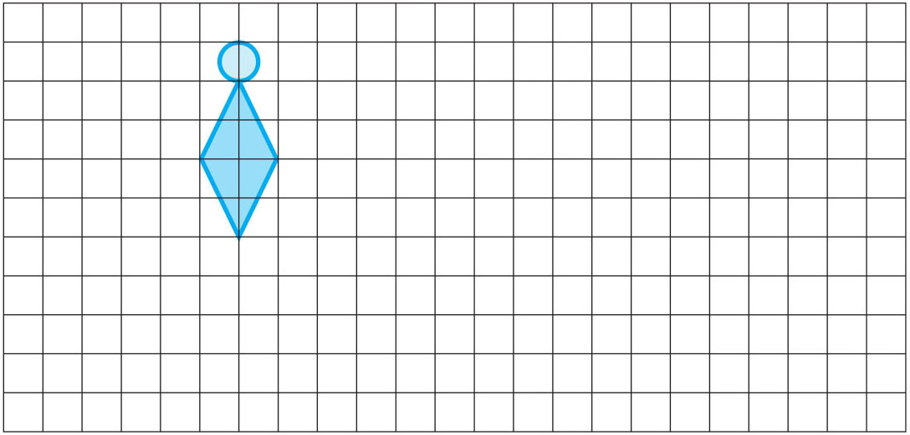
6．将梯形绕点A 顺时针旋转90°，再向右移7格。
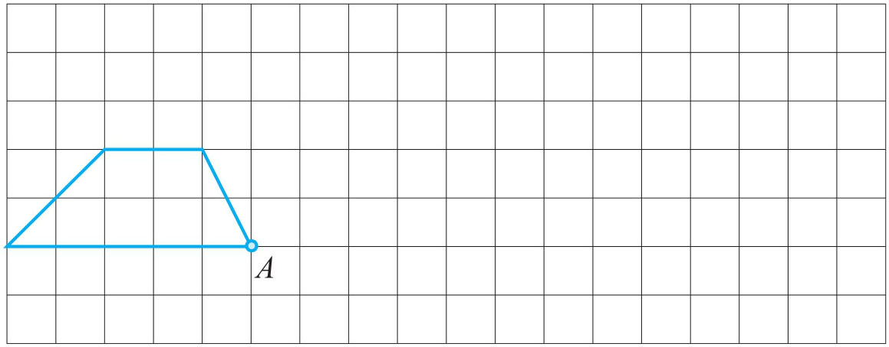
7．一个七位数的电话号码，先顺时针旋转90°，再顺时针旋转90°后是8961098，原来的电话号码是多少？
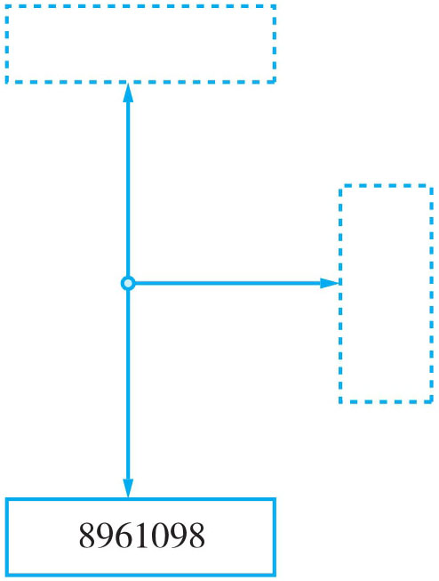
8．三角形AB ′C ′是三角形ABC 绕点A 逆时针旋转50°得到的，已知∠AEC ′为70°，求∠C 的度数。
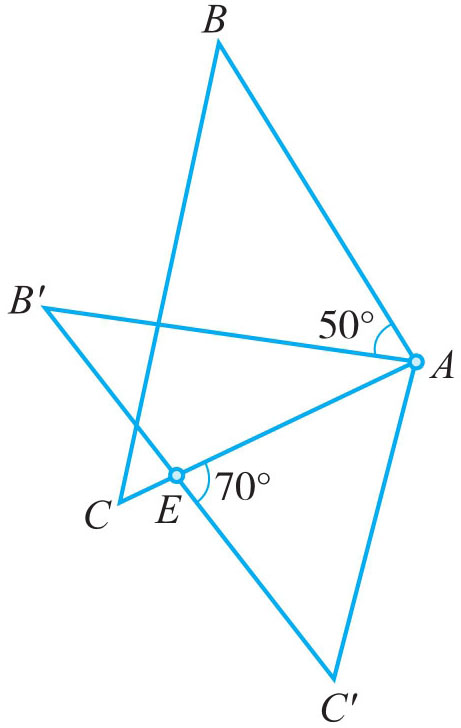